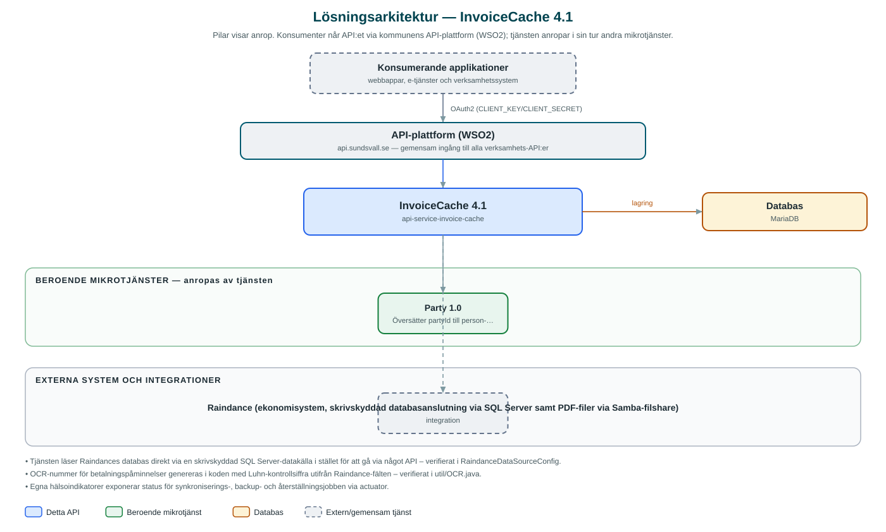

InvoiceCache
Cachar fakturainformation från ekonomisystemet Raindance i en lokal databas och tillhandahåller sökbara fakturauppgifter och faktura-PDF:er för kommunens applikationer.
Om API:et
InvoiceCache gör kommunens fakturadata tillgänglig för andra applikationer utan att varje system behöver fråga ekonomisystemet Raindance direkt. Ett schemalagt Spring Batch-jobb läser varje timme fakturauppgifter från Raindances databas via en skrivskyddad anslutning och speglar dem i tjänstens egen databas.
Via API:et kan applikationer söka fram fakturor på bland annat fakturanummer, OCR-nummer, datumintervall och part (partyId, som översätts till person- eller organisationsnummer via Party-tjänsten). Tjänsten lagrar och levererar även fakturor i PDF-format – dels genom import från en filshare, dels genom att applikationer laddar upp PDF:er via API:et.
Tjänsten fungerar därmed både som läs-cache mot Raindance och som lagringsplats för faktura-PDF:er, med batchjobb vars hälsa exponeras via tjänstens övervakningsändpunkter.
Det här gör API:et
- Fakturasökning – Sökning av cachade fakturor på fakturanummer, OCR-nummer, datum, belopp och part, med paginering.
- Timvis synkronisering från Raindance – Ett schemalagt Spring Batch-jobb läser fakturauppgifter direkt ur Raindances databas och uppdaterar cachen varje timme.
- Faktura-PDF:er – Lagring och hämtning av fakturor i PDF-format, både styckvis och som ström för flera fakturor.
- PDF-import från filshare – Faktura-PDF:er importeras schemalagt från en Samba-filshare kopplad till Raindance.
- Uppslag via part – Sökning på partyId översätts till person- eller organisationsnummer via Party-tjänsten, och svaren mappas tillbaka till rätt part.
- Backup och återställning – Fakturacachen säkerhetskopieras i egna batchjobb som kan återställa data om synkroniseringen misslyckas.
API-dokumentation
API:ets samtliga resurser, parametrar och datamodeller finns beskrivna i en OpenAPI-specifikation som är hämtad ur källkodsförrådet. Den kan utforskas interaktivt i Swagger UI eller laddas ner som YAML. Programvaruförteckningen (SBOM) listar tjänstens samtliga tredjepartskomponenter med version och licens.
Teknisk dokumentation
Nedan beskrivs hur tjänsten är uppbyggd, vilka andra tjänster den anropar och vad som krävs för att driftsätta den. Informationen är härledd ur källkoden och dess konfiguration på GitHub.
Arkitektur

API:et är en mikrotjänst (Java 25, Spring Boot via kommunens gemensamma tjänsteplattform dept44 (8.0.8), byggd med Maven). Konsumenter når tjänsten via kommunens gemensamma API-plattform (WSO2) på api.sundsvall.se – tjänsten anropas aldrig direkt. Tjänsten anropar i sin tur andra mikrotjänster i kommunens tjänstelandskap. Lagring: MariaDB med Flyway-migrationer för fakturacache och PDF-lagring; separat skrivskyddad SQL Server-anslutning mot Raindance. Övriga integrationer som förekommer i koden: Raindance (ekonomisystem, skrivskyddad databasanslutning via SQL Server samt PDF-filer via Samba-filshare).
Teknikstack
- Språk: Java 25
- Ramverk: Spring Boot via kommunens gemensamma tjänsteplattform dept44 (8.0.8), byggd med Maven
- Databas: MariaDB med Flyway-migrationer för fakturacache och PDF-lagring; separat skrivskyddad SQL Server-anslutning mot Raindance
- Övrigt: Spring Batch för synkroniserings-, backup- och återställningsjobb med Shedlock-låsning, jcifs-ng för Samba-åtkomst, mssql-jdbc mot Raindance
Beroenden till andra mikrotjänster
Tjänsten anropar följande mikrotjänster. Versionerna är hämtade ur källkodens integrationsklienter.
| Tjänst | Version | Användning |
|---|---|---|
| Party | 1.0 | Översätter partyId till person- eller organisationsnummer vid fakturasökning. |
Programvaruförteckning
Tjänsten bygger på 365 tredjepartskomponenter fördelade på 15 olika licenser. Till skillnad från tabellen ovan, som listar andra mikrotjänster, avses här de programbibliotek som ingår i bygget. Se programvaruförteckningen för hela listan.
Konfiguration och driftsättning
- Två datakällor: MariaDB för cachen (Flyway-versionerad) och en skrivskyddad SQL Server-anslutning mot Raindance
- Samba-anslutning för import av faktura-PDF:er, med eget cron-schema
- Cron-scheman för batchjobben, bland annat timvis fakturasynkronisering
- URL och anslutningsuppgifter för Party-tjänsten
- Gräns för när cachade fakturor betraktas som inaktuella (raindance.invoice.outdated)
Noterbart ur källkoden
- Tjänsten läser Raindances databas direkt via en skrivskyddad SQL Server-datakälla i stället för att gå via något API – verifierat i RaindanceDataSourceConfig.
- OCR-nummer för betalningspåminnelser genereras i koden med Luhn-kontrollsiffra utifrån Raindance-fälten – verifierat i util/OCR.java.
- Egna hälsoindikatorer exponerar status för synkroniserings-, backup- och återställningsjobben via actuator.
- Base64-innehåll i PDF-anrop maskeras i anropsloggarna via Logbook-filter.
Källkod
Källkoden är öppen och finns hos Sundsvalls kommun på GitHub. I källkodsförrådet finns även instruktioner för att klona, konfigurera och starta tjänsten i egen miljö.